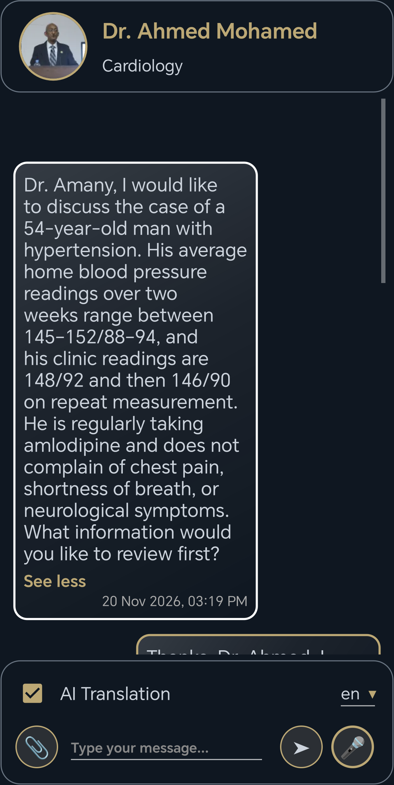

شرح المزايا
شات الأطباء بترجمة لحظية اختيارية
يمكن للأطباء الكتابة أو إرسال الرسائل الصوتية بلغتهم. عند تفعيل المستقبِل للترجمة اللحظية واختيار اللغة، يمكن عرض الرسائل الواردة بتلك اللغة. توضح اللقطات المتقابلة حوارًا نصيًا على موبايلين.
حمّل التطبيق من Google Play تكبير الصورة
تكبير الصورةأحمد يكتب بالعربية
حوار واحد بلغتي استقبال مختلفتين
يكتب د. أحمد بالعربية، وتقرأ د. أماني الرسالة بالإنجليزية. ترد أماني بالإنجليزية، فيظهر الرد بالعربية لدى أحمد. يعرض كل زوج من اللقطات الرسالة نفسها وتوقيتها على شاشة المرسل وشاشة المستقبِل. خيار AI Translation مفعّل على الجهازين، واللغة المختارة ظاهرة في كل واجهة.
اختر الترجمة وتحقق من التفاصيل المهمة
يفعّل المستقبِل AI Translation ويختار لغة الاستقبال من واجهة الشات. توضح الصور ترجمة رسائل نصية، ولا تعرض مكالمة صوتية حية مترجمة. قد تتضمن الترجمة خطأ أو عبارة ملتبسة؛ تأكد مع الطبيب الآخر من الجرعات والوحدات والتواريخ والنفي عند الحاجة. تساعد الترجمة في التواصل، لكنها لا تعتمد صحة المحتوى السريري.
خطوات الاستخدام
- افتح المحادثة وفعّل AI Translation إذا أردت ترجمة الرسائل الواردة.
- اختر اللغة التي تريد قراءة الرسائل المستقبلة بها.
- راجع الحوار واستوضح أي معلومة طبية مهمة تحتمل الالتباس.
من داخل التطبيق
لقطات أصلية من التطبيق. سجلات المرضى والحوار السريري أمثلة افتراضية، واستُبعدت بيانات الاتصال الخاصة.
تكبير الصورةأحمد يكتب بالعربية


تكبير الصورةأماني تستقبل الرسالة بالإنجليزية
 تكبير الصورة
تكبير الصورةأماني ترد بالإنجليزية
 تكبير الصورة
تكبير الصورةأحمد يستقبل الرد بالعربية
أسئلة عن الميزة
هل يجب أن يغيّر المرسل لغته؟
يوضح المثال أن كل طبيب يمكنه الكتابة بلغته، مع تفعيل الترجمة من جهة الاستقبال.
ما الذي توضحه الصور المتقابلة؟
تُظهر نفس الرسالة العربية عند استقبالها بالإنجليزية، ثم نفس الرد الإنجليزي عند استقباله بالعربية، داخل التطبيق الفعلي.
هل الصور تعرض مكالمة صوتية مترجمة؟
لا. الصور تعرض حوارًا نصيًا. يدعم المنتج الرسائل النصية والصوتية، لكن المكالمة الصوتية مسار مختلف.